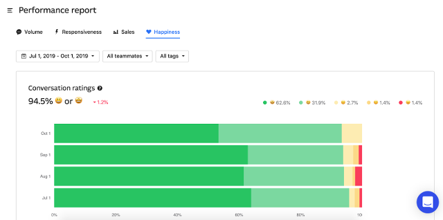
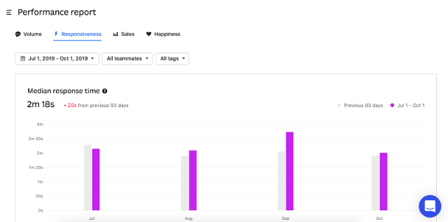
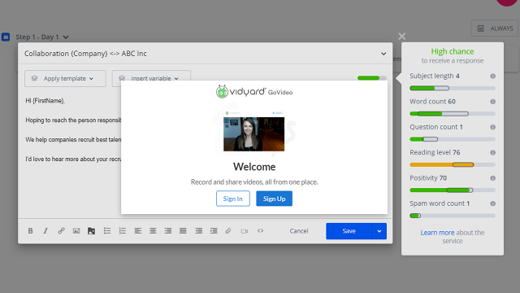
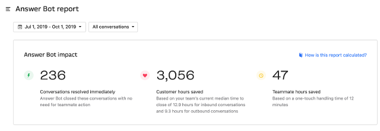

In this interview, I talk to Eugenia Chuprina, head of support at Reply.
On a personal note, Reply delivered one of the best chat experiences I’ve ever experienced (as a customer), so I reached out to Eugenia to learn how she did it!
This is now the TWELFTH support management interview we’ve conducted on this blog, and they’re filled with first hand experience on things like building culture, structuring your team, hiring, support channels, KPIs and more!
Check out other interviews with senior managers from Zendesk, 99designs, Hootsuite, Basecamp and others.
Alrighty, let’s jump in!
About Reply
Reply is a fully-automated sales platform for sales people, recruiters and marketers. From day one, they invested in customer service to grow their business faster. They’re now a Top 50 provider on G2Crowd with half of their positive reviews referencing a positive support experience.
Eugenia started at Reply as the fifth employee managing all communications. She’s built a lean team to drive engagement and positive reviews, in addition to just making sure every visitor gets a fast and highly effective experience.
Her strategy has focused on delighting the customer with fast, two minute response times while using a highly personal and human touch.
In this interview, we cover the following:
- How to wow your customers
- How to implement a highly personal style guide
- How to create a live chat roster (they only use six agents!)
- Agent KPIs to drive engagement
- And much more!
Looking to build a team of your own? Check out Support as a Service by Influx, or browse more research on this blog.
The Interview

Reply generates a 95%+ positive conversation rating on Intercom
Hi Eugenia, thanks for taking the time! First, tell me a little bit about Reply
Thanks Alex. Happy to be here!
Reply started in 2014 with three people. We started in Europe, and now we have more than 50 staff working remotely all over the world!
I was the fifth employee at Reply. I was hired to do any kind of communication at Reply: Customer success, customer support, everything!
I now manage a six person team.
Wow, only six people. We’ll get to that later. First though, tell me a little bit about the business
Reply is a sales automation system for inbound and outbound emails.
Most of our customers are sales people, but it’s also popular with recruiters and some marketers.
Why do people love your support so much?
They love that we are fast. Our median response time is less than two minutes. That includes a response in the message, not just ‘Hi’. I believe that with such a high-paced life-style that we live in nowadays, everyone deserves a fast solution.
We’re open and honest. If there’s a bug, we say ‘sorry’ and we mean it. We work really hard to actually help them.
Could you give me an example of creating a custom solution for a client rather than just leaving a generic response?
Sometimes someone will want to upload a file for blacklisting purposes, that’s too big to upload directly. For a variety of reasons, we haven’t offered that solution for everyone by default, so if someone needs this, my team can work directly with our engineering team to accomplish that task.
Or if someone experiences delivery issues on their end - usually, due to their domain records being set up incorrectly. We help them with the settings on their end and make sure they don’t have any spam-related issues going forward.
This delights the customer. It really wows them.
We’ve talked a bit about honesty and caring in our previous conversations. What are some tactics you use to show someone how much you care?
For starters, we want to show everyone that we are here. We never neglect a chat. We always tell someone how long it will take to get back to them.
We’re of course polite in all scenarios.
It’s important to show that you yourself are a human being. You should talk to that person exactly as you would like someone to talk to you. We also have problems and we know how to be in need with someone’s assistance. We’ve chosen to become support professionals to give people what they need - help.
Every time we compose an answer, we need to provide as much information as we can. We want to show that we understand that they’re busy and they need straight forward answers. We want to make their life a little bit easier with every word we type.

Two minute median response times with Intercom chat. Quite the accomplishment!
Any examples of going the extra mile?
Sometimes we’ll send a video rather than a long response. Where appropriate, we try to combine all types of communication in a message - video, image, text. Sometimes people want long descriptions with screenshots, sometimes they’d prefer a visual explanation, such as a video recording. We do a bit of everything in every conversation.
How is your support team structured?
We run our roster from 2 am EST to 8 pm EST. The early shift only has one person as there aren’t as many chats, then we have 2-3 people rostered during the US business day.
The shifts usually overlap, so for example, one person starts at 8 am, then the next person starts at 11 am. We then rotate our shifts every day, planned many weeks in advance.
We now also have a ‘Level Two” queue for technical cases. Our level two agents work directly with engineers, and don’t work directly with the customers, so they’re the connection between the two.

Simple outbound automation with Reply
Is it hard to hire night shift agents?
Nope, surprisingly it isn’t. 50% of applicants are night people.
Getting into metrics, what are some of the individual KPIs within the team? How do you track performance?
I tried individual KPIs, it didn’t work. I’m not ok with micromanagement.
My team and I are all friends. I see myself as a mentor and team leader.
I track conversation numbers inside our Intercom account, and then I review all conversations where the customer feedback was below perfect.
How do you motivate then?
I set high standards early. I show them how to handle chats. They tell me they want to be professionals, just like me, hehe :)
I share my vision in terms of communication with our users, basically, taking good care of every single one of them.
You have to talk to them like they’re your friends that you’d like to take care of when they need your support.
When reviewing low customer feedback scores in Intercom, what % are product related vs conversation related?
Overall, 95% of conversations are 5/5 [perfect score], of the 5%, about 90% of the issues are product related.
If the review is conversation related, I talk immediately with anyone that gets negative ratings. I do this weekly.

Just launched, bots like Answer Bot can only respond to <10% of responses effectively
How do you provide live chat on the weekends?
We rotate weekends. One agent works one weekend every six weeks. Usually they just check in the evenings, make sure nothing serious has happened.
If something is happening with the product, we should know about it and escalate it.
We also set an ‘out of office’ on the weekends to set expectations.
Great, almost done. Last question. Any predictions for customer service in 2020?
Two things:
I think there will be more guides for customer service. It will be much easier to find the information you need to start and build a support team in the future.
Secondly, I think customer service will become more of a topic that is trained and learned in Universities. As a person you need to learn how to talk to each other. We would then become better people in the world too!
Agreed on the latter! Thanks, this was fun!
Thanks for having me!
Interested to learn more about Reply? Check out their features and use cases.
Looking to build a chat team of your own? Check out live chat support by Influx or learn about how we generated 27% more leads from live chat.
For more articles like this, check out all of our research and interviews.